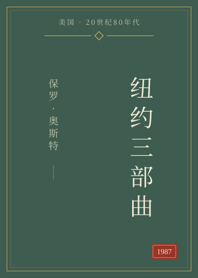
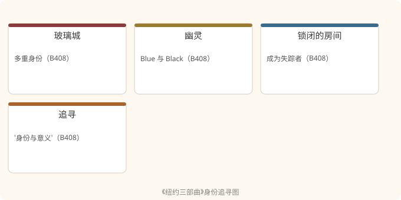

纽约三部曲
一、基本信息
| 作者 | 保罗·奥斯特 |
|---|---|
| 成书/出版 | 1987年（Britannica B408：The New York Trilogy (1987)——'experimental detective stories'） Paul Auster — Encyclopaedia Britannica（百科全书） |
| 国别/地区 | 美国 |
| 时代 | 现当代 · 20世纪80年代 |
| 体裁 | 实验小说（三部曲） |
| 语言 | 英语 |

《纽约三部曲》身份追寻图（主题·结构图）
二、创作背景
Britannica（B408）：'gained renown for a series of experimental detective stories published collectively as The New York Trilogy (1987)'。
Britannica（B408）：City of Glass (1985)——犯罪小说家被卷入谜案承担多重身份；Ghosts (1986)——Blue 受雇于 White 调查 Black；The Locked Room (1986)——作家研究失踪作者渐取其身份。
Britannica（B408）：'often concerned with the search for identity and personal meaning'。
三、内容脉络
《玻璃城》：作家奎因'成为'侦探（B408：takes on multiple identities）。
《幽灵》：Blue 调查 Black 的自我镜像（B383 式——B408）。
《锁闭的房间》：研究者'成为'失踪者（B408）。
四、主要人物表
| 人物 | 身份 | 说明 |
|---|---|---|
| 奎因 | 玻璃城的作家 | （B408：City of Glass——通说待核） |
| Blue/Black/White | 幽灵的名字 | （B408：Ghosts——B408已载） |
五、主题与艺术特点
- '身份与个人意义的追寻'（B408：search for identity and personal meaning）。
- '实验侦探小说'（B408）。
- '多重身份'的承担（B408：City of Glass）。
六、影响与评论
- Britannica：'gained renown for...'（B408）。
Paul Auster — Encyclopaedia Britannica（百科全书） - Britannica：'The Invention of Solitude'（B408 交叉）。
Paul Auster — Encyclopaedia Britannica（百科全书）
七、阅读建议
难点
- 侦探类型的解构。
- '身份'的哲学追问。
- 《纽约三部曲》中译本（人民文学等——通说待核）。
- 英文原版。
奥斯特首选；后接《孤独及其所创造的》。
八、待核实
- 奎因/Blue/Black人名核对（B408已载 Ghosts 三名）。
- 三部合集1987年（Sun & Moon说）待核。
- '玻璃城'细节待核。
本页主要来源
保罗·奥斯特的其他收录作品：纽约三部曲